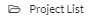

Creating, Saving and Viewing Projects¶
New Projects¶
To create a new Project, click on  in Project List page or click on Projects, then in the Top Menu bar.
in Project List page or click on Projects, then in the Top Menu bar.
The new project page is displayed.
Configure new project parameters¶
Enter the Project name and default settings for the project and click  , the Main Screen is then displayed, see Main Screen.
, the Main Screen is then displayed, see Main Screen.
Opening Projects¶
To open the existing project from the main screen, click Projects, then click .
Enter the required project name, for example Tutorial, which is used as the project name in the project window.

Project selection window¶
Saving Projects¶
Save the project by clicking on  , under the Projects top menu bar. When a project has been updated this is shown in red, when a project has been saved and has no changes it is shown in black. To discard all changes in a project, click the Projects and then in the top menu bar. As for the Save icon, this will be shown in red when the project has been updated and black when there are no changes in the project.
, under the Projects top menu bar. When a project has been updated this is shown in red, when a project has been saved and has no changes it is shown in black. To discard all changes in a project, click the Projects and then in the top menu bar. As for the Save icon, this will be shown in red when the project has been updated and black when there are no changes in the project.
Viewing and Updating Projects¶
Manage existing projects by clicking on in the top menu bar to go to the main Project window (Project selection window)
To open a project click on the project name, for example Tutorial, which opens the Main Screen, see Main Screen.
Files which have been shared from another user are shown as read only,
. To make changes, first duplicate the project.
To manage the files click on the three dots to the right of the file name (File management options).
File management options¶
Choose Rename to change the project name
Choose Duplicate project to create a new separate version of the project
Choose Delete to delete the project from your account

If there are changes in the project Discard is shown instead of Delete. The project must either be saved or changes discarded before it can be deleted. If a project has been shared from another user Remove from list is shown instead of Delete. This will remove the project from your list of files but not delete the original version.